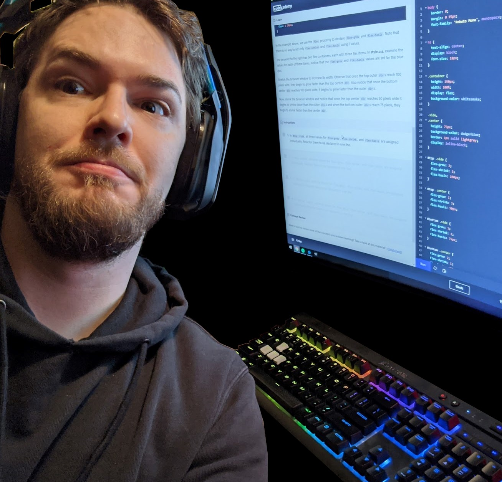

About Me
Hello! :)

Professional Summary
Javascript developer with 3+ years of experience in building and maintaining web applications. Expertise in debugging and troubleshooting code, as well as optimizing web performance. Strong analytical and problem-solving skills, with a passion for continuous learning and improvement.
Turning Stone
February 2022 - July 2022Gaming Technician
- Performed repairs, maintenance, upgrades, installments and configurations of all gaming devices.
- Technical support for user desktops, laptops and printers.
- Maintained documentation for any troubleshooting/repairs.
- Executed routine preventative maintenance on all equipment.
Verizon
March 2013 - April 2021Fiber Customer Service Agent
- Technical support for Fios business and residential customers.
- Troubleshooting expert in network diagnostics, wifi, video signal, physical connections, phone service.
- Established ownership over complex problems and confidently deescalated customers that were prepared to cancel service.
- Consistently recognized as a top agent in metrics such as customer satisfaction and first ticket resolution.
- Created technical documentation for the launch of Business Digital Voice product.
- Assisted in training of new technical support agents.
Cxtec
January 2010 - March 2013Helpdesk Agent
- Technical support for 300+ users both on-site & remote.
- Hardware installation, diagnosis, maintenance and relocation customers that were prepared to cancel service.
- Responsible for operation and maintenance of A/V devices such as projectors & Polycom equipment for presentations and team meetings.
- Helped build Linux based servers for imaging computers.
Revonate
October 2008 - January 2009Computer Repair Technician
- Repaired laptops, desktops and notebooks – Diagnosing LAN, WAN, BSOD’s, No Audio/Video/Power issues.
- Replaced any hardware necessary to make a working product such as LCD’s, Keyboards, Motherboards, etc.
- Performed troubleshooting on Windows XP, Vista and 7 (32 and 64 bit systems).
- Tested systems to confirm they were 100% functional and up to standard for best customer experience.